"The avatar needs to be a, let's do it with the body, actually, well, the body's symbolic, give me two mockups with the body and then two with the seven seats."Your words, 26 September. And earlier: "What is Atuned? Your avatar."
All four are drawn on one reading: James, with his five story bank entries written in, at arrival and after twelve releases. Every number is the product's own. The releases use the release button's own arithmetic, the one the app runs when you press Release. Each avatar sits where the Field wheel sits today, in the real build, so you are judging it where the centrepiece would stand.
Open the live prototypeSwitch between the four, move the releases slider, try Angela or a blank profile. It is the full app with the avatar laid over the Field.
The four, at arrival and after twelve releases
What stays the same in all four, so you are comparing the drawings and nothing else. Each seat is a ring in its own colour and closes as it conducts. Anything a release has reached is marked and never unmarked. The blue brackets mark the seat the ritual is working on. The big number is CQ.
Body
One. The figure
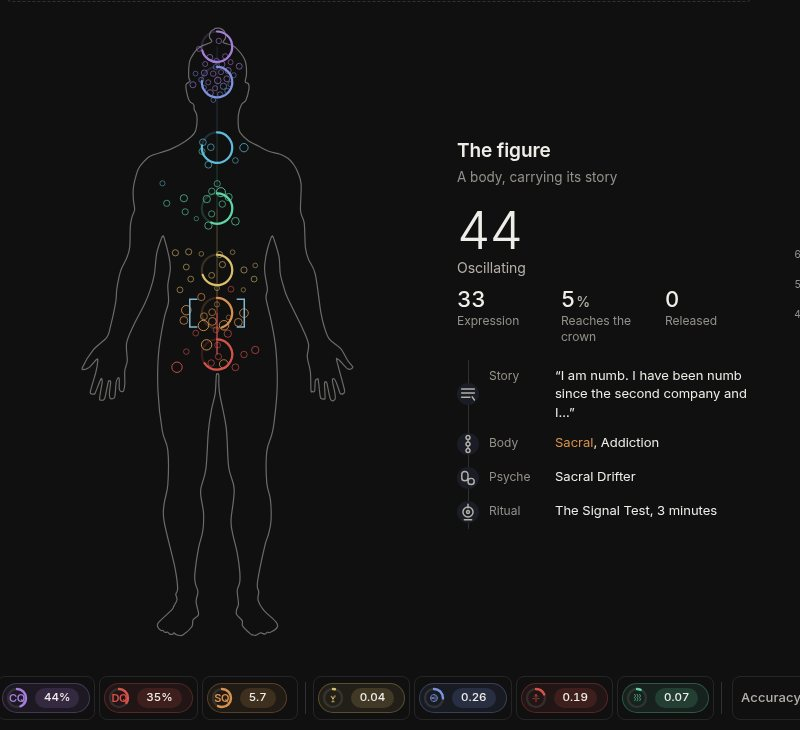
Arrival
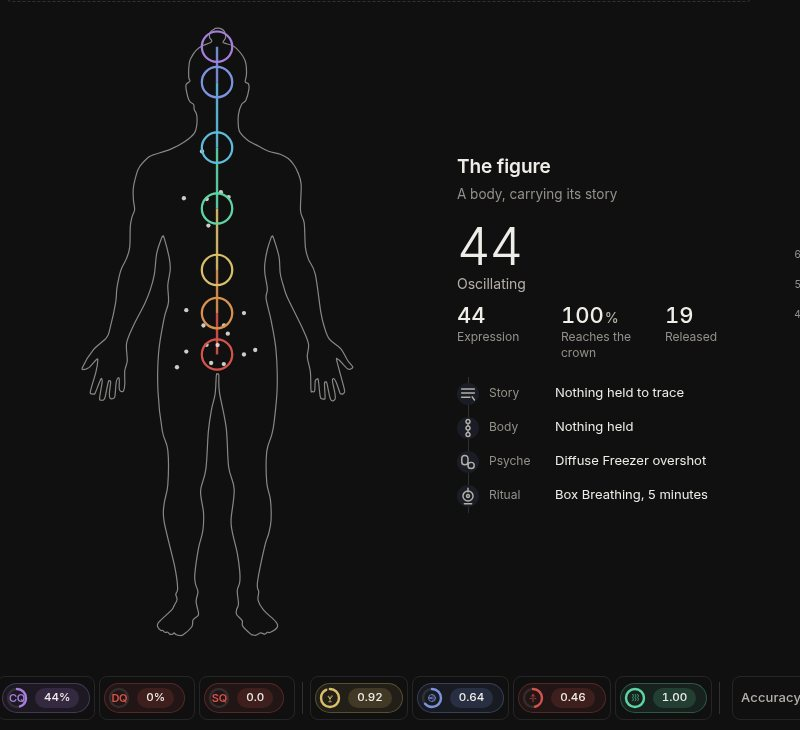
After twelve releases
Reads: a body carrying its story. Each charge is a small ring at the real place the Body page puts that address. A white point marks everywhere a release has reached.
For it: the most literal link to the story. You can see where the charge sits.
Against it: as you release, the colour leaves, so improvement looks like going grey. At arrival the head is a knot of rings.
Body
Two. The nerves
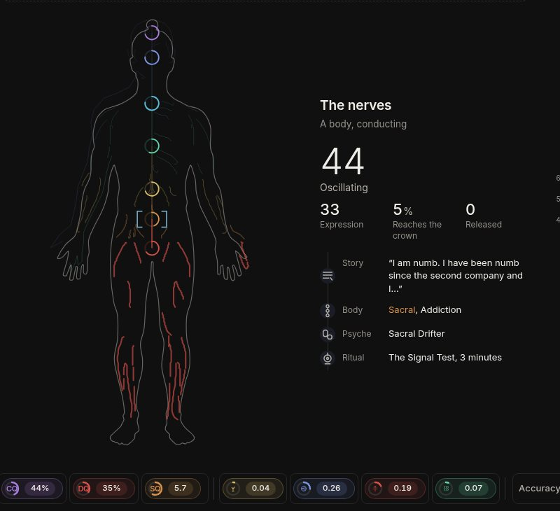
Arrival
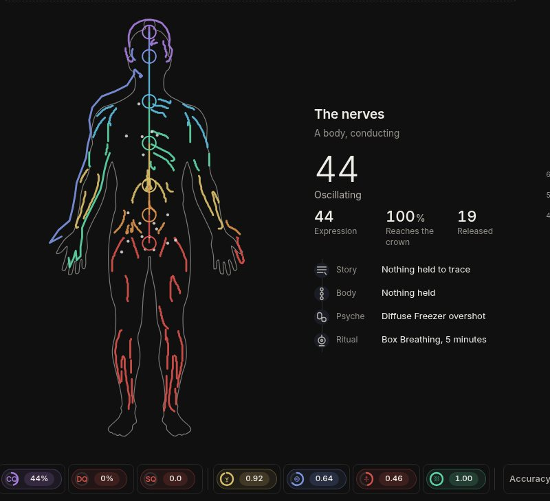
After twelve releases
Reads: a body that conducts. These are the Body page's own 72 traced nerve branches. Each branch is as bright as its seat, and every seat below it, lets through.
For it: the biggest before and after of the four. Improvement arrives as light, which is your own rule: "the more you release, the brighter you are".
Against it: it is the Body page's flow layer promoted to the centre. The product would draw the same body twice.
Seats
Three. The channel
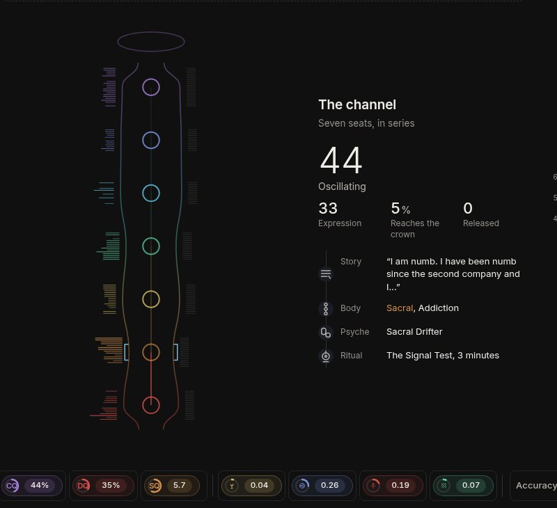
Arrival
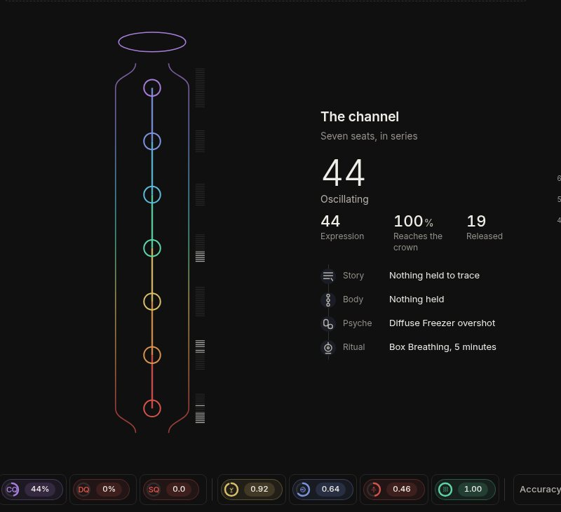
After twelve releases
Reads: seven seats in series, evenly spaced because it is a symbol, not anatomy. The walls pinch where a seat holds. Left ticks are charge now; right ticks are the record. The halo lights by how much reaches the crown.
For it: it is the Body page's channel standing on its own, and the halo is the app's own boot mark.
Against it: the tick combs read more like a gauge than a being. It is also a column of seven, a list shape.
Seats
Four. The ring
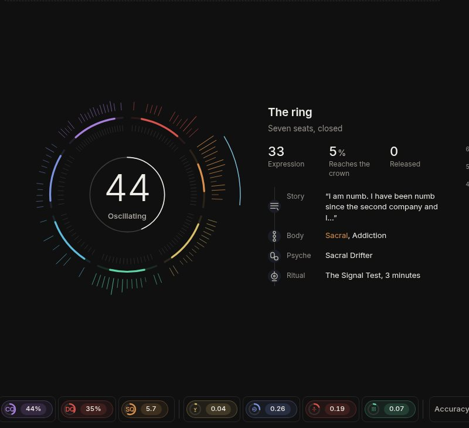
Arrival
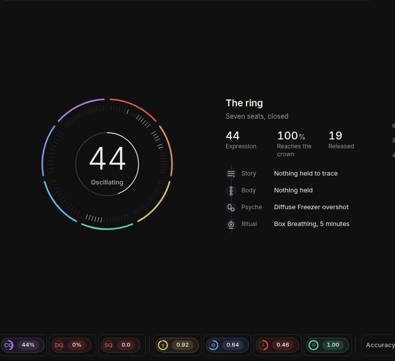
After twelve releases
Reads: the seven seats closed into one ring, in the same order the Field wheel uses. Each arc grows from its own middle as its seat conducts, so when every seat clears, the ring closes. CQ sits in the centre.
For it: the ring closing is the loop drawn as one gesture. It is also your first drawing: "a ring with seven bands ... a truncated CQ".
Against it: it is nearly the Field wheel's own shape, in the Field wheel's own cell. See question three.
On a phone
At 390 wide, arrival on the left of each pair and twelve releases on the right. The avatar sits above the reading.
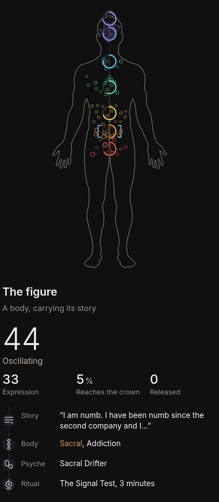
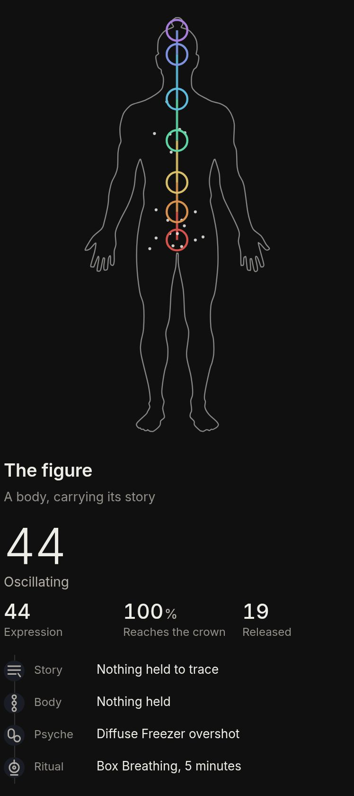
The figure
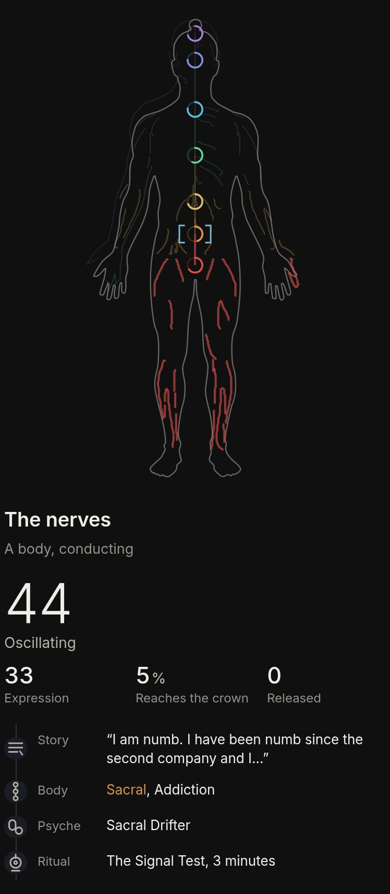
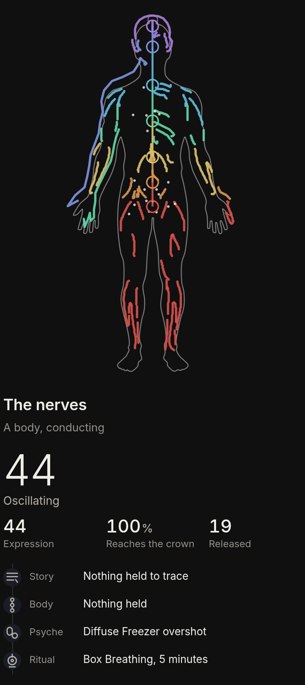
The nerves
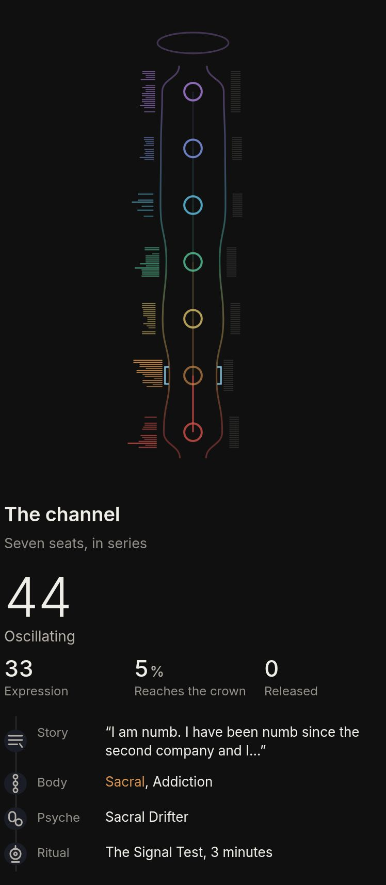
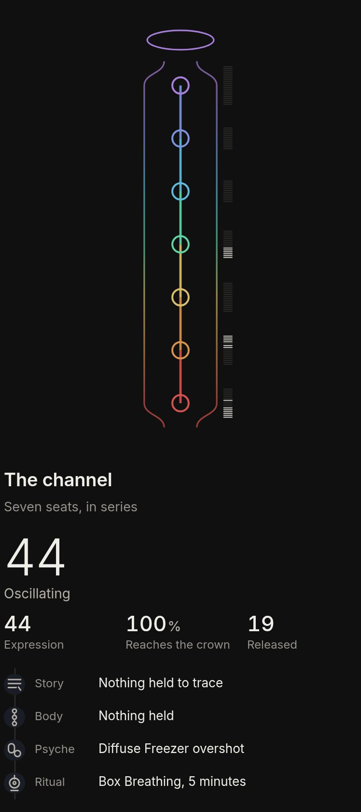
The channel
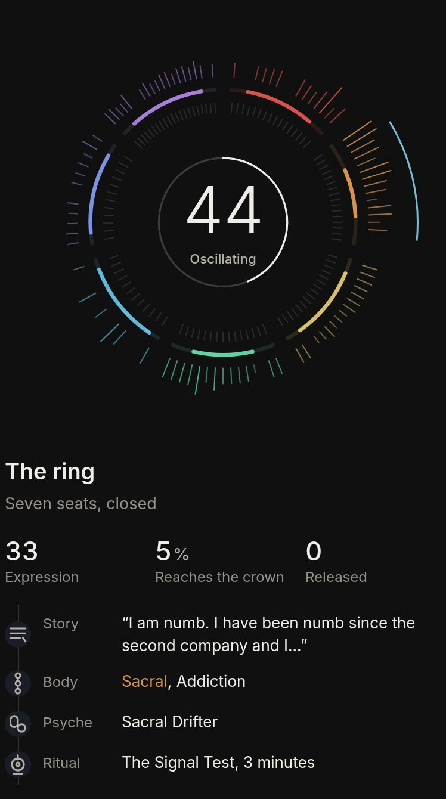
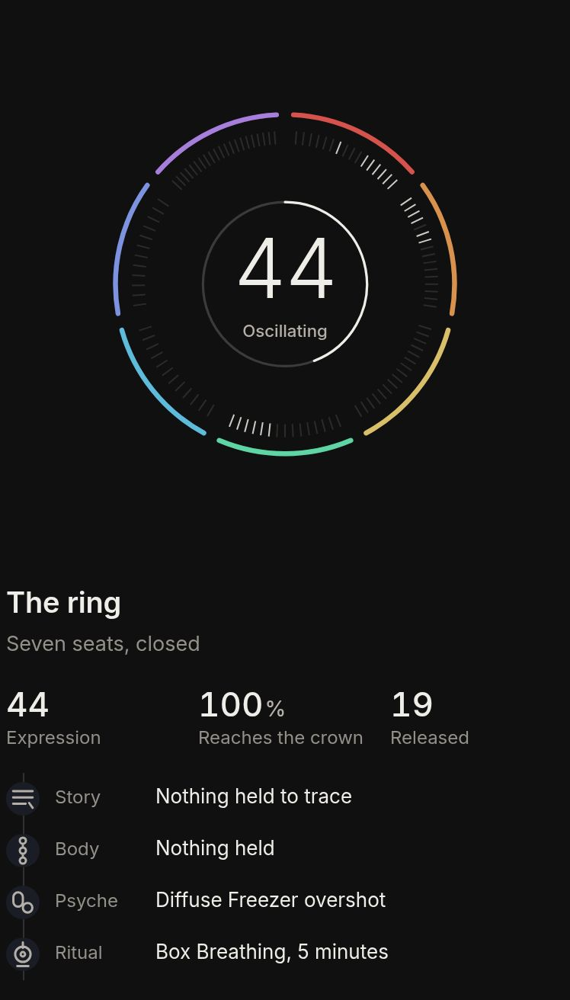
The ring
What moves when James releases
Read straight from the engine at each step. The drawings change a great deal. CQ, the big number, hardly moves.
James
Arrival
After 4 releases
After 12 releases
CQ, the 21 laws
43.7
43.8
44.2
Expression, what the held charge lets CQ show
33
44
44
Reaches the crown, the seven seats multiplied
5%
44%
100%
Radiance, your vibrancy
0.19
0.42
0.70
Addresses still carrying charge
90
89
0
Addresses a release has reached
0
15
19
Nineteen releases emptied ninety addresses because a release lowers a feeling, and every address carrying that feeling empties with it. That is the app's own arithmetic, not a drawing choice.
The team's read
Your rulings, taken together, point to the seven seats, and among those, the ring. The reasons, each one yours:
The chain puts the body underneath the avatar. "The avatar to the ritual, the ritual to the psyche, the psyche to the body locations, the body to the story." If the avatar is a body, the top layer and the body layer become the same drawing and one link in the chain disappears. The Body page already carries the body, and the nerves drawing is its own flow layer.
You called the body symbolic, mid sentence, while asking for these.
Improvement should arrive as light. "The more you release, the brighter you are." The nerves and the ring gain light as a person releases. The figure loses its colour.
The loop is a circle, never a list. The ring is the only one of the four that closes. The channel is a column of seven.
The app's own mark is already this avatar. The boot mark is a spine of seven seats inside a ring of address ticks, under a halo. Choosing the seats makes the avatar and the brand one drawing.
If you choose the body anyway, the team would take the nerves over the figure, for reason three.
What we need from you
1. Is the avatar a body, or the seven seats?
This is the ruling everything else waits on, including the "You" card on the Field's right side, which cannot draw a figure until this is decided.
Seats, as the ring. Matches the chain, the loop and the boot mark. It then has to share the centre with the Field wheel (question three).
Seats, as the channel. Easier to read at a glance and no clash with the wheel, but it is a column of seven, a list shape.
Body, as the nerves. The most dramatic change as a person releases. The Body page and the avatar would then draw the same body.
Body, as the figure. The most literal link to the story. Releasing turns it grey.
2. Which number should the avatar lead with?
You ruled the CQ number should be bigger, "so it's in your face." Over twelve releases, James's CQ moves from 43.7 to 44.2 while his avatar goes from dark to fully lit. CQ is the 21 laws, and in your words a release may move it "0.1 or 0.05". Expression is CQ held down by whatever charge is still carrying, so releasing lifts it until it reaches CQ.
CQ. True to the laws, but the headline stays still while the picture changes, so a release looks like it did nothing.
Expression. Moves with every release and stops at CQ. It means a second number becomes the headline.
Both on one ring. CQ drawn as the ceiling and expression filling up to it. It shows the lever, and it costs one more thing to learn.
3. If the ring wins, what happens to the Field wheel?
The wheel is already a ring of seven seat bands with a number in the middle, and the app opens on it. Two rings like that in the same place would say one thing twice. It is the question already open as D11: "Does the avatar replace the Field as the surface the app opens on, or sit beside it?"
The avatar becomes the wheel's centre. The ring replaces the CQ disc in the middle of the wheel and the patterns stay around it. One drawing, and the busiest surface in the app gets busier.
The avatar opens and the wheel sits one press away. The centrepiece is what people see first, and the Field becomes a place a person goes.
Side by side. Both stay whole, and each gets about half the width.
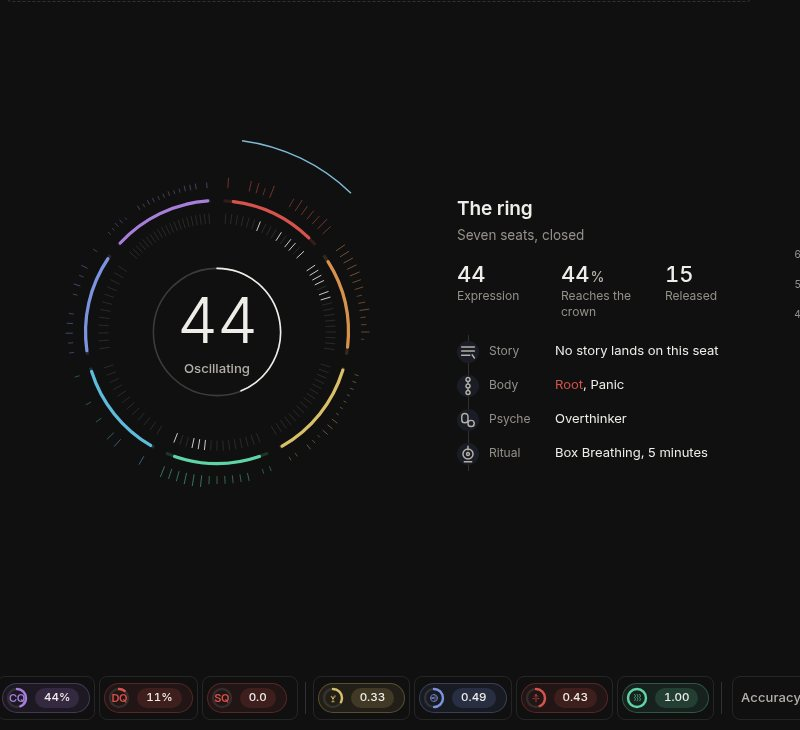
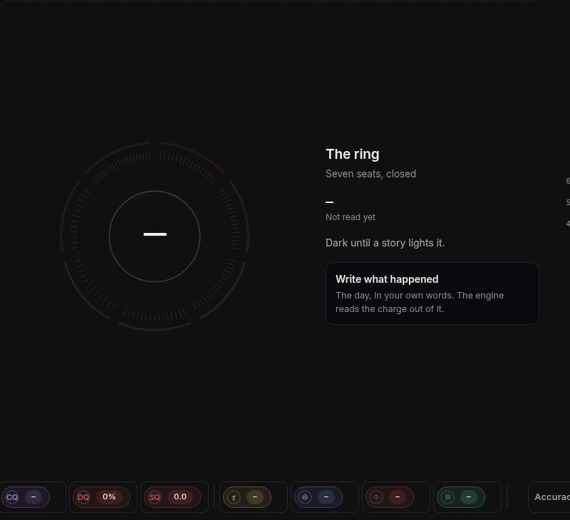
Found while building, for the backlog
The Body page's channel reads clear when it is not. Its seat reading only counts addresses at 4 or above. Angela carries 74 addresses and reads 100 percent at all seven seats. The avatars above use each address's own conduction, which the engine already computes.
A blank profile is brighter than James after twelve releases. Radiance reads 0.80 with nothing entered, against 0.70 for him. Anything that glows by radiance has to treat "not read yet" as dark, as these do.
Under Snow, the Field's reading strip is unreadable. The stage stays on the ruled black ground while the strip uses Snow's dark ink. "44%" measures 1.07 to 1 against the 4.5 to 1 floor.
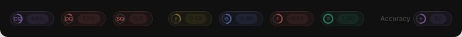
After a full clear the psyche names an overshoot. At zero charge, James reads "Diffuse Freezer overshot", because replacing a feeling can go past 6 and overshoot counts as a pattern of its own. That may be intended. It is the first thing a person sees at the top of the loop.
Built over the committed build 3a1cde5, source md5 8603477093ad65b320d68727e8c40c02, in proto/avatar/four/. 299 checks pass across 50 pictures at 1600 and 390, in Dark, Snow, Punch and Glass. Nothing under atuned_src/ was touched.